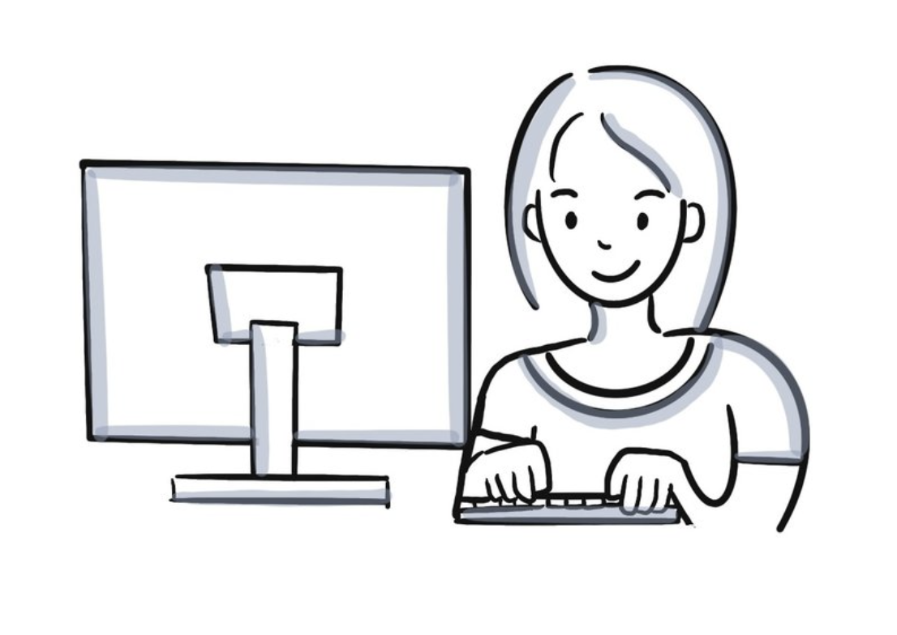
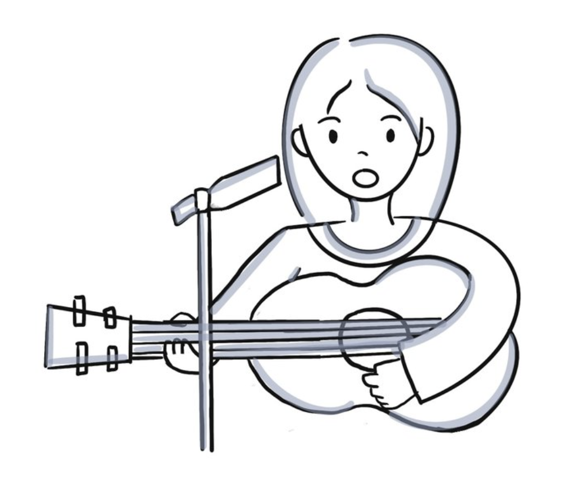
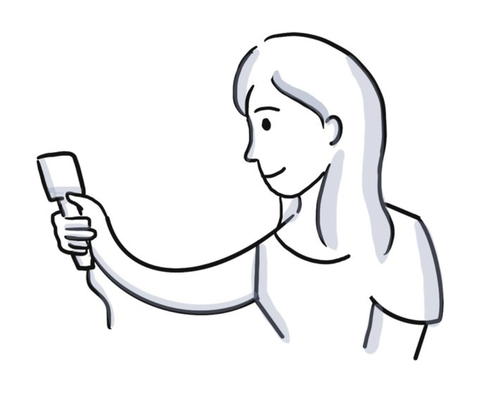
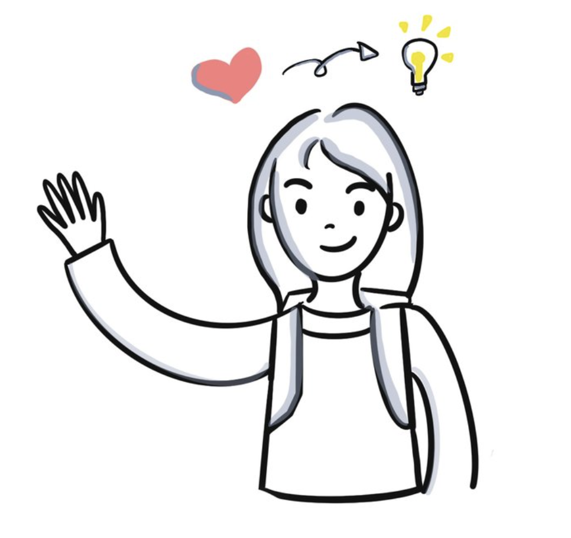

About Me
I came to the US as an exchange student from Zhengzhou, China at the age of sixteen. Since then I have lived and explored many different cities in the U.S and embraced rich and diverse culture. From a small village in Burr Oak, Michigan to the Historical City Boston then to a college town in East Lansing and to the Innovative Palo Alto in California.
I currently live in Ann Arbor and I am a Master Candidate at UMSI, University Of Michigan - School of information.
I am expecting to finish my Master on April 2021, and I am excited to see where I land next!
My focus on user experience design and research at School of Information @University of Michigan prepared me with the knowledge of understanding the world of information and the complex relationship between people and technology. I am especially passionate about working in the healthcare industry as a UX designer and researcher. I wanted to use design in technology to improve quality of life for people, empower them, especially those with disabilities and special needs.


My hobbies including drawing, song writing and crafting had trained me with creative skills to turn narratives into stories, use graphic illustrations to make abstract ideas vivid.
My easygoing and open-minded characteristics have set me up for great listening and communication skills. My experiences in Podcasting, interviewing and workshop facilitation had provided me many opportunities to understand people’s behavior, motivation and use those findings to access their needs.

